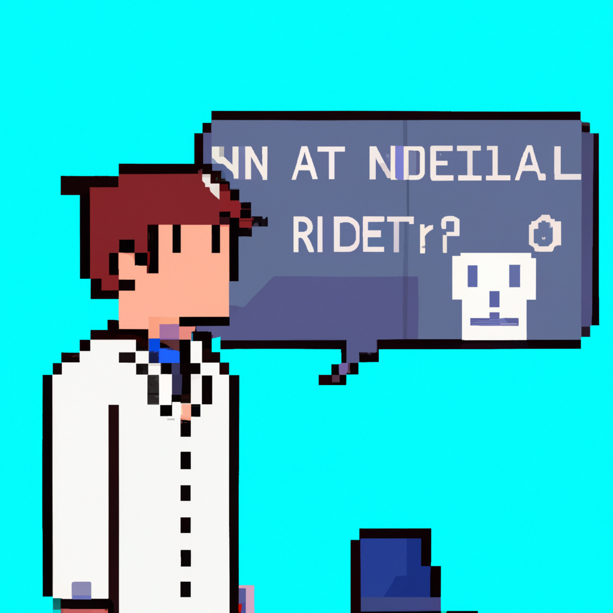

Why AI will never replace the radiologist
As technology continues to evolve, it's natural to wonder if AI will one day take over the role of the radiologist. Although AI has made great strides in the field of radiology, it is not yet capable of replacing the radiologist.
AI is great at quickly performing tasks that would otherwise take a human many hours to do. But when it comes to radiology, AI is not as accurate or precise as a human radiologist. AI is a powerful tool, but it cannot yet replicate the critical thinking and decision making of a human radiologist.
Radiologists are able to accurately diagnose illnesses and diseases based on the images they interpret. Through their training and experience, they are able to look at images and spot patterns that AI is not yet able to recognize. AI is good at spotting abnormalities, but it cannot yet recognize the nuances that radiologists can see.
Additionally, AI cannot yet understand the complexities and variations of the human body. AI is not yet capable of understanding the range of possibilities that can occur in the human body.
AI is an incredibly powerful tool, but it cannot yet replace the radiologist. AI is a great supplement to the radiologist's work, but it can never be the sole source of a diagnosis. The importance of the radiologist will remain and AI will only be able to expand their work.